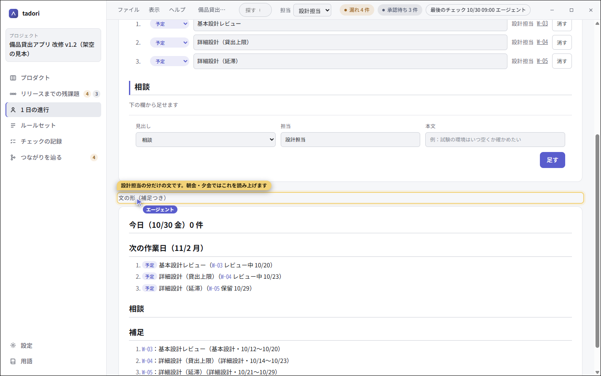

担当ごとの 1 日の進行を、エージェントと回す
プロダクト単位の残課題とは別に、人単位で「今日やったこと・次にやること・相談」を見る場面です。 下書きは tadori が材料から作り、各担当はそれを画面で見ながら、自分のエージェントと仕事を進めます。
- 下書きの材料
- WBS の状態の変化（git の履歴）・台帳の差分・チェックの記録
- 使う MCP の道具
- daily（読む）・daily_generate・daily_add / daily_update / daily_remove・task_update・screen
- エージェントがしないこと
- 承認・「漏れを埋めた」の判定・push
1. 下書きは、材料から作る
朝会・夕会のたびに、誰かが記憶から書き起こす必要はありません。tadori は、WBS の状態が変わった日（git の履歴）、台帳を足した・直した人（commit の作者を人の表で引く）、チェックの記録を読み、担当ごとの「今日・次の作業日・相談」の下書きを作ります。
台帳の整備（行を足した・直した）は、成果物の作業と読み違えないよう別の見出しに分けます。行の頭には「済・作業中・予定・確認」などの印が付きます。

2. 各担当は、自分の分だけを見る
上の帯の「担当」で人を選ぶと、どの画面もその人の分だけに絞られます。役割（設計担当など）で書かれた行も、人の表の役割で見分けます。
下の「文の形」は、見出し・番号付きの一覧・印の札で読みやすく描き、WBS や課題の番号を押すとその場所へ移ります。「文をコピー」で、そのまま朝会・夕会に貼れる文になります。

3. エージェントと、その場で進める
各担当のエージェントは MCP で同じ 1 日の進行を読み、頼まれたら行を足す・直す・消すを道具で行います。作業の状態を進めるのは task_update で、その場で commit するので、翌日の下書きの「状態が変わった日」もずれません。
{ "tool": "task_update", "id": "W-03", "status": "done" }
{ "tool": "daily_add", "section": "consult", "who": "設計担当", "text": "W-04 のレビューを誰に頼むか決めたい" }エージェントは専用カーソルで画面を指しながら説明できます。人のマウスは使いません。直した行・足した行・消した行は、下書きを作り直しても残ります。
4. 決めるのは人
1 日の進行は記録で、判定ではありません。承認や「漏れを埋めた」の判断を書く口は、画面にも MCP にもありません。push も人が中身を確かめてから行います。